Перейти к основному содержанию
vse.la
Стихи, тексты песен
☰
Стихи
Тексты песен
Блог
Проза
Сочинения
Сценарии
Популярные песни
Песни из кино, ВИА Пламя - Снег кружится (А снег не знал и падал). Из к/ф "История любви"
Песни о зиме - Снежная песенка (К нам на новоселье жалует зима)
Мантры - Гаятри мантра
МФТИ - Дельта альфа альфа штрих
Детские песни, Песни на детский праздник - Колёсики, колёсики и красивый руль
Русские народные песни - Месяц над водой отражается
Dj Naab, Т. Цогсогмаа (Tsogsogmaa) - Монгол миний эх орон
Песни на детский праздник, Песни из мультфильмов - Вальс (Из мультфильма Анастасия)
Песни из кино, Детские песни - Песня звездочёта (из к/ф Красная Шапочка)
Хурд хамтлаг - Эх орон
Паулина Андреева - Оттепель
Русские народные песни - Улетай на крыльях ветра
Песни малышам, Песни на детский праздник - Пчёлка Жу-жу-жу
Песни из кино, Майя Кристалинская - Мы с тобой два берега у одной реки (из к/ф Жажда)
Русские народные песни, Машенька - Со вьюном я хожу
Ірина Зінковська - А на озері лотос
Песни малышам, Детские песни, Песни на детский праздник - Бабка Ёжка, выгляни в окошко!
Песни малышам - Ко-ко-ко Песенка цыплят
Зульфия Чотчаева - Моя душа
Хелависа (Мельница) - Пусть вечерняя звезда взойдёт над тобой
Мантры - Мантра Ганеши. Ом шрим хрим клим глаум...
Детские песни, Песни на детский праздник, Валерия Вольнова - Раз ладошка, два ладошка, я пока что не звезда
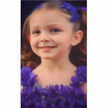
ElectroCandi - Changes In My Life (House Music)
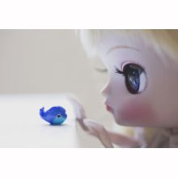
Ольга Зарубина - На теплоходе музыка играет
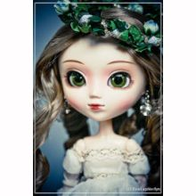
Песни малышам - Мы милашки, куклы неваляшки
Stim Axel - Без тебя
Песни малышам, Песни на детский праздник - Если ты в ладоши хочешь хлопать так
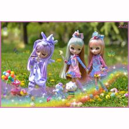
Русские народные песни - Метелица
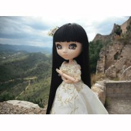
Nene, Алтанжаргал (Altanjargal) - Goolingoo (Гоолингоо)
Б.Аззаяа (B.Azzaya) - Амин Хоёр Эрдэнэ
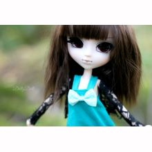
Детские песни, Игры - Математика наш друг
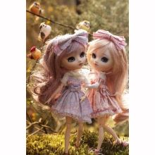
Joezi, Lizwi - Amathole
Исмоиловы Хасан и Хусен - Твои зеленые глаза
Сябры - Вы шуміце, бярозы (А я лягу-прылягу)
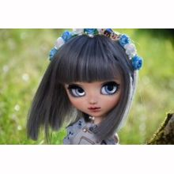
Песни малышам - Вышла курочка гулять
Макка Сагаипова - Сердце моё
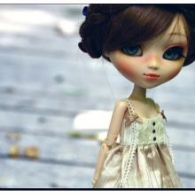
Адыгейские народные песни - Адыгэ нысэ унэ идошэ
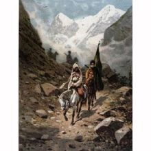
Песни о зиме - ТРИ БЕЛЫХ КОНЯ (из кинофильма "Чародеи")
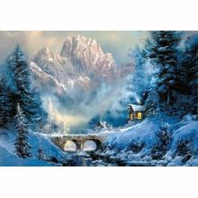
Звёздный час - Чудо
Dj Benzina - When You Finally Saw
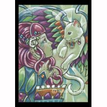
Песни из кино - Ходжа Насреддин
Непара - Плачь и смотри
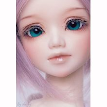
Марха Макаева - Безаман алу
Песни из мультфильмов - Песня Бременских музыкантов (Ничего на свете лучше нету)
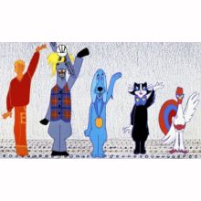
Песни из кино, Николай Рыбников - Когда весна придёт не знаю (из к/ф "Весна на заречной улице")
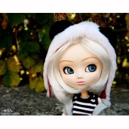
Русские народные песни - Уродилася я, как былинка в поле…
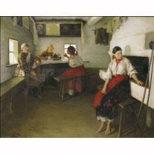
Диана Шарапова - Полетим
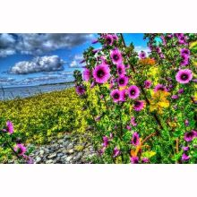
Русские народные песни, Пелагея - Шёл казак на побывку
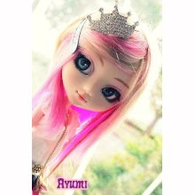
Макка Сагаипова - Массо йо1 со санна ирсе йойла
Ангелина Каплан - Барев Дзез
Авторы
Новые стихи
Тексты песен
Переводы песен
Блог
Проза
Сочинения
Сценарии
Цензура
О проекте